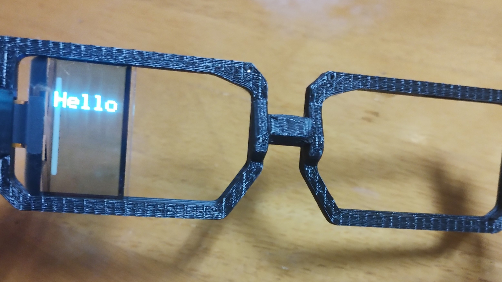
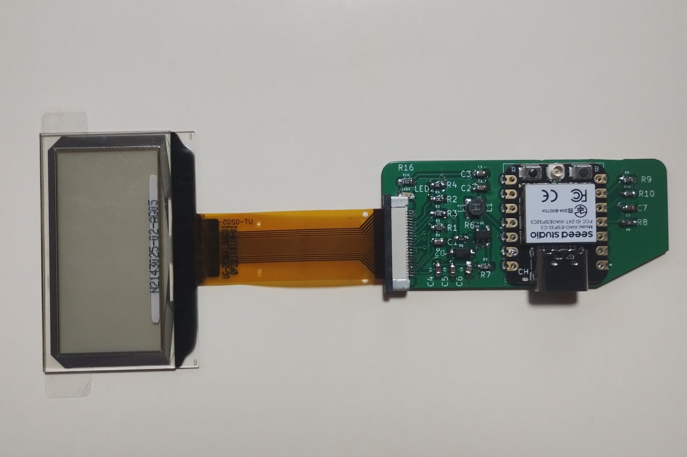
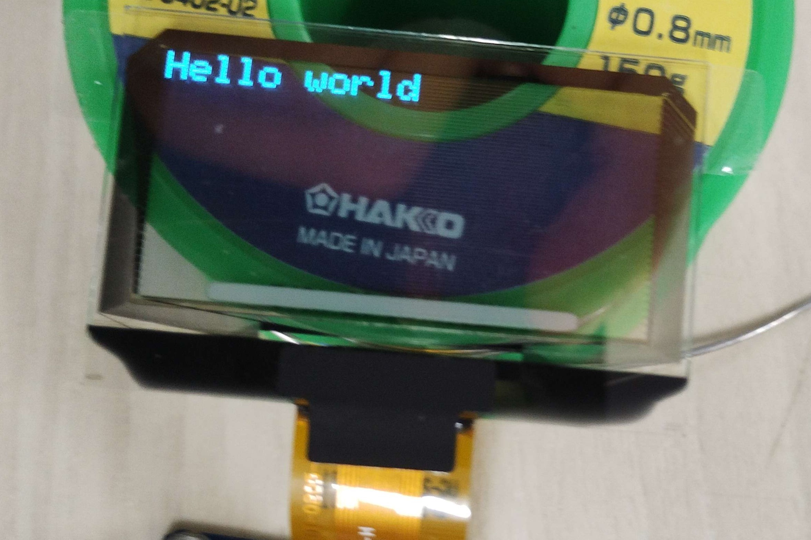

字幕を表示する眼鏡を目指して
音声から生成した字幕を表示するスマートグラスを企画し、試作とクラウドファンディングに向けた準備を進めました。元の制作記録では、この事業は休止中とされています。 この作品は、team phantomでの企画から製作まで私が担当しました。
薄型表示と自立動作
透明な有機ELを使ってレンズ部分を薄くし、表示機能を絞ることで軽量化を目指しました。字幕生成はWi-Fi環境下でスマートフォンを使わずに動作する構想で、Arduino環境での開発にも対応させる計画でした。
試作で見えた課題
表面実装部品を使った基板の試作には時間がかかり、初号機の製作には約1か月を要しました。透明有機ELやサーバーの費用、基板・筐体の製作体制が継続開発の課題となりました。完成イメージと試作写真を残し、事業は休止しています。
制作の記録


